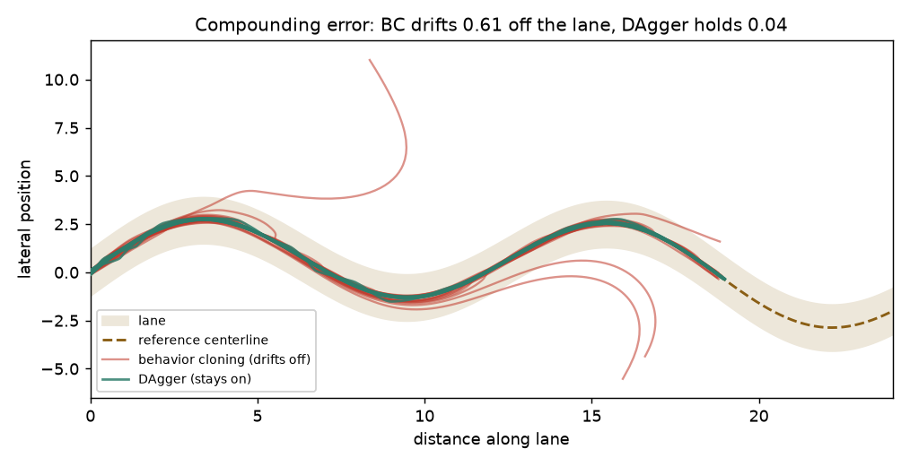

Why copying an expert's demonstrations isn't enough — and how querying the expert on the learner's own mistakes fixes it.

Behavior cloning trains a policy by regression on an expert's (state, action) pairs. The catch: it only ever sees the expert's own near-perfect states. At run time its small residual errors carry the agent into states the expert never demonstrated, where the policy has no idea what to do — and those errors compound. DAgger fixes the distribution gap: roll out the current learner, ask the expert for the correct action on the states the learner actually visits, aggregate, and retrain.